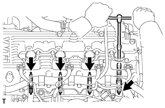
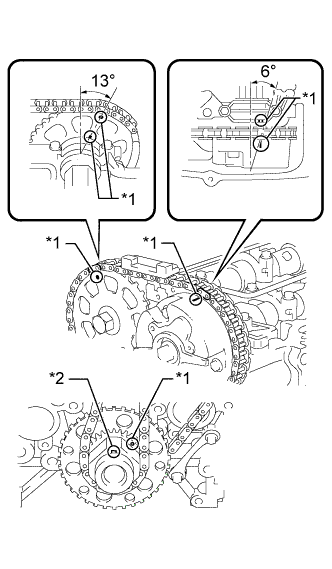
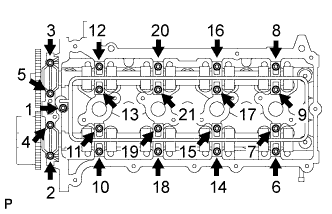
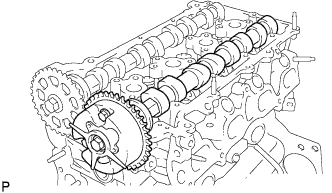
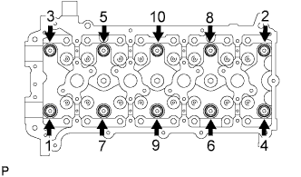
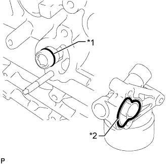
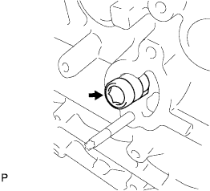
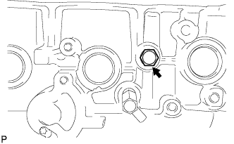
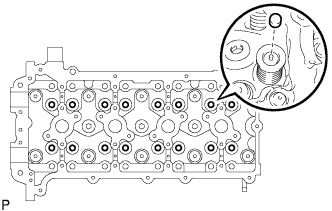

БЛОК ДВИГАТЕЛЯ > РАЗБОРКА |
| 1. СНИМИТЕ СВЕЧУ ЗАЖИГАНИЯ |
|  |
Снимите 4 свечи зажигания с помощью свечного ключа на 16 мм.
| 2. СНИМИТЕ КОНТАКТНЫЙ ДАТЧИК ДАВЛЕНИЯ МОТОРНОГО МАСЛА |
Отсоедините разъем контактного датчика давления масла.
С помощью удлиненной торцевой головки на 24 мм снимите контактный датчик давления жидкости.
| 3. СНИМИТЕ ДАТЧИК ДЕТОНАЦИИ |
Отсоедините разъемы датчика детонации.
Выверните болт и снимите датчик детонации.
| 4. СНИМИТЕ ДАТЧИК ТЕМПЕРАТУРЫ ОХЛАЖДАЮЩЕЙ ЖИДКОСТИ |
Отсоедините разъем датчика температуры охлаждающей жидкости двигателя.
 |
При помощи ключа с глубокой насадкой на 19 мм снимите датчик температуры охлаждающей жидкости и прокладку.
| 5. СНИМИТЕ КРЫШКУ МАСЛОНАЛИВНОЙ ГОРЛОВИНЫ В СБОРЕ |
 |
Снимите крышку маслоналивной горловины.
Снимите прокладку с крышки маслоналивной горловины.
| 6. СНИМИТЕ САПУН В СБОРЕ |
 |
Отсоедините шланг PCV от клапана PCV.
С помощью ключа на 22 мм для контргайки шарового шарнира снимите клапан принудительной вентиляции картера.
| 7. СНИМИТЕ ДАТЧИК ПОЛОЖЕНИЯ РАСПРЕДВАЛА |
Отсоедините разъем датчика положения распредвала.
Выверните болт и снимите датчик положения распредвала.
| 8. СНИМИТЕ ДАТЧИК ПОЛОЖЕНИЯ КОЛЕНЧАТОГО ВАЛА |
Отсоедините разъем датчика положения коленчатого вала и открепите зажим жгута проводов.
 |
Выверните болт и снимите датчик положения коленчатого вала.
| 9. СНИМИТЕ ГИДРАВЛИЧЕСКИЙ КЛАПАН ИЗМЕНЕНИЯ ФАЗ В СБОРЕ |
 |
Расцепите 2 зажимов и отсоедините 2 разъема.
Выверните болт и снимите кронштейн зажима жгута проводов.
Отсоедините разъем гидравлического клапана изменения фаз.
Выверните болт и снимите гидравлический клапан изменения фаз в сборе.
Снимите кольцевое уплотнение с гидравлического клапана изменения фаз.
| 10. СНИМИТЕ КРЫШКУ ГОЛОВКИ БЛОКА ЦИЛИНДРОВ В СБОРЕ |
 |
Выверните 19 болтов, отверните 2 гайки и снимите крышку головки блока цилиндров и 2 прокладки.
| 11. СНИМИТЕ ВПУСКНОЙ ПАТРУБОК ОХЛАЖДАЮЩЕЙ ЖИДКОСТИ |
Выверните болт, отверните 2 гайки и снимите впускной патрубок охлаждающей жидкости и прокладку.
| 12. СНИМИТЕ ТЕРМОСТАТ |
 |
Снимите термостат с крышки цепного привода газораспределительного механизма.
| 13. СНИМИТЕ ШКИВ КОЛЕНЧАТОГО ВАЛА |
 |
С помощью SST зафиксируйте шкив коленчатого вала и ослабьте болт шкива таким образом, чтобы в коленчатый вал было ввернуто 2-3 витка резьбы.
| *a | Ослабьте |
| *b | Удержание |
С помощью SST и болта шкива снимите шкив коленчатого вала.
| *a | Ослабьте |
| *b | Удержание |
| 14. СНИМИТЕ ПОДДОН КАРТЕРА № 2 В СБОРЕ |
Выверните пробку сливного отверстия и снимите прокладку.
Выверните 18 болтов и отверните 2 гайки.
 |
Вставьте лезвие инструмента для обрезки прокладки поддона картера между масляными поддонами. Срежьте имеющийся герметик и снимите масляный поддон.
| 15. СНИМИТЕ МАСЛОПРИЕМНИК С СЕТЧАТЫМ ФИЛЬТРОМ В СБОРЕ |
 |
Выверните 2 болта, отверните 2 гайки и снимите маслоприемник с сетчатым фильтром и прокладку.
| 16. СНИМИТЕ МАСЛЯНЫЙ ПОДДОН В СБОРЕ |
Выверните 16 болтов и отверните 2 гайки.
 |
Снимите поддон картера, вставив отвертку между ним и блоком цилиндров.
| *1 | Защитная клейкая лента |
 |
Снимите кольцевое уплотнение.
| 17. ВЫВЕРНИТЕ РЕЗЬБОВУЮ ШПИЛЬКУ МАСЛЯНОГО ПОДДОНА |
| 18. СНИМИТЕ НАТЯЖИТЕЛЬ ПОЛИКЛИНОВОГО РЕМНЯ В СБОРЕ |
Выверните 3 болта и снимите натяжитель ремня.
| 19. СНИМИТЕ КРЫШКУ ЦЕПНОГО ПРИВОДА ГАЗОРАСПРЕДЕЛИТЕЛЬНОГО МЕХАНИЗМА В СБОРЕ |
 |
Выверните 19 болтов и отверните 2 гайки, как показано на рисунке.
Снимите крышку цепного привода газораспределительного механизма, вставив отвертку между крышкой цепного привода и головкой блока цилиндров или блоком цилиндров.
| *1 | Защитная клейкая лента |
Снимите 3 кольцевых уплотнения.
| 20. СНИМИТЕ РЕЗЬБОВУЮ ЗАГЛУШКУ |
С помощью торцевого шестигранного ключа на 10 мм снимите резьбовую заглушку.
| 21. СНИМИТЕ НАСОС СИСТЕМЫ ОХЛАЖДЕНИЯ В СБОРЕ |
Выверните 8 болтов, снимите насос охлаждающей жидкости и прокладку.
| 22. СНИМИТЕ САЛЬНИК КРЫШКИ ЦЕПНОГО ПРИВОДА ГАЗОРАСПРЕДЕЛИТЕЛЬНОГО МЕХАНИЗМА |
 |
Поместите цепной привод газораспределительного механизма на деревянные бруски.
| *1 | Защитная клейкая лента |
| *2 | Деревянный брусок |
Извлеките сальник с помощью отвертки.
| 23. СНИМИТЕ ПЕРЕПУСКНОЙ КЛАПАН МАСЛЯНОГО НАСОСА |
Выверните пробку перепускного клапана с помощью торцевого ключа на 27 мм и снимите прокладку.
Снимите пружину клапана и перепускной клапан масляного насоса.
| 24. УСТАНОВИТЕ ПОРШЕНЬ ЦИЛИНДРА №1 В ВМТ ТАКТА СЖАТИЯ |
|  |
Временно установите болт ведущего колеса привода газораспределения.
Проверните коленчатый вал по часовой стрелке и совместите установочные метки на ведущем колесе привода газораспределения и зубчатых колесах распредвала, как показано на рисунке.
| *1 | Установочная метка |
| *2 | Ключ |
Снимите болт ведущего колеса привода газораспределения.
| 25. СНИМИТЕ НАПРАВЛЯЮЩУЮ ЦЕПНОГО ПРИВОДА ГАЗОРАСПРЕДЕЛИТЕЛЬНОГО МЕХАНИЗМА |
 |
Выверните 2 болта и снимите направляющую цепного привода с кольцевым уплотнением.
| 26. СНИМИТЕ НАТЯЖИТЕЛЬ ЦЕПИ № 1 В СБОРЕ |
Отведите стопорную пластину вверх, чтобы освободить фиксатор, и глубоко вдавите плунжер в натяжитель.
| *1 | Плунжер |
| *2 | Стопорная пластина |
Опустите стопорную пластину, чтобы ввести фиксатор в зацепление, и вставьте в отверстие стопорной пластины штифт диаметром 3,0 мм (0,118 дюйма).
 |
Выверните болт, отверните гайку и снимите натяжитель цепи с прокладкой.
| 27. СНИМИТЕ БАШМАК НАТЯЖИТЕЛЯ ЦЕПИ |
 |
Выверните болт и снимите башмак натяжителя.
| 28. СНИМИТЕ УСПОКОИТЕЛЬ ЦЕПИ № 1 |
 |
Выверните 2 болта и снимите успокоитель цепи.
| 29. СНИМИТЕ ЦЕПЬ В СБОРЕ |
| 30. СНИМИТЕ ВЕДУЩЕЕ ЗУБЧАТОЕ КОЛЕСО КОЛЕНЧАТОГО ВАЛА |
 |
Снимите ведущую звездочку коленчатого вала с коленчатого вала.
| 31. СНИМИТЕ КРЫШКУ ПОДШИПНИКА РАСПРЕДВАЛА |
|  |
Равномерно ослабьте затяжку и выверните 21 болт крышек подшипников в последовательности, показанной на рисунке.
 |
Снимите маслоподводящую трубку и кольцевое уплотнение с крышек подшипников.
 |
Снимите 9 крышек подшипников.
| 32. СНИМИТЕ РАСПРЕДВАЛ |
|  |
| 33. СНИМИТЕ РАСПРЕДВАЛ № 2 |
 |
| 34. СНИМИТЕ РЫЧАГ ПРИВОДА КЛАПАНА № 1 В СБОРЕ |
 |
Снимите 16 рычагов приводов клапанов с головки блока цилиндров.
| 35. СНИМИТЕ ЗВЕЗДОЧКУ РАСПРЕДВАЛА |
 |
Зажмите распредвал в тисках, выверните болт звездочки и снимите звездочку распредвала.
| 36. ПРОВЕРЬТЕ ЗУБЧАТОЕ КОЛЕСО РАСПРЕДВАЛА В СБОРЕ |
Проверьте замок зубчатого колеса распредвала.
Зажмите распредвал в тисках и убедитесь, что зубчатое колесо распредвала неподвижно.
| *1 | Канал запаздывания |
| *2 | Канал опережения |
| *a | Открыто |
| *b | Закрывание |
 | Кусок резины |
 | Виниловая лента |
Извлеките стопорный штифт.
Закройте 4 масляных канала на шейке распредвала виниловой лентой, как показано на рисунке.
Проколите ленту со стороны канала опережения, а затем – со стороны канала запаздывания с противоположной стороны проточки, как показано на рисунке.
 |
Подайте сжатый воздух под давлением около 200 кПа (2,0 кгс/см2, 28 фунтов на кв. дюйм) в два канала, доступные через отверстия в ленте.
| *1 | Канал запаздывания |
| *2 | Канал опережения |
Проверьте, чтобы зубчатое колесо распредвала вращалось в направлении угла опережения при снижении давления воздуха со стороны проточки запаздывания.
| *1 | Канал запаздывания |
| *2 | Канал опережения |
| *a | Уменьшение давления |
| *b | Поддержание давления |
Когда зубчатое колесо распредвала займет положение, соответствующее максимальному опережению, уменьшите давление воздуха в канале со стороны запаздывания, а затем в канал со стороны опережения.
Проверьте плавность вращения.
Несколько раз поверните зубчатое колесо распредвала в пределах диапазона поворота, не доводя его до положения максимального запаздывания. Убедитесь, что шестерня вращается плавно.
Проверьте, фиксируется ли муфта в положении наибольшего запаздывания.
Убедитесь, что зубчатое колесо распредвала оказывается зафиксированным в положении наибольшего запаздывания.
| 37. СНИМИТЕ ЗУБЧАТОЕ КОЛЕСО РАСПРЕДВАЛА В СБОРЕ |
 |
Выверните болт фланца и снимите зубчатое колесо распредвала.
| *a | Не снимайте |
| 38. СНИМИТЕ ГОЛОВКУ БЛОКА ЦИЛИНДРОВ В СБОРЕ |
|  |
Равномерно ослабьте 10 болтов в последовательности, показанной на рисунке. Выверните 10 болтов головки блока цилиндров и снимите плоские шайбы.
| 39. СНИМИТЕ ПРОКЛАДКУ ГОЛОВКИ БЛОКА ЦИЛИНДРОВ |
Снимите прокладку головки блока цилиндров с головки блока цилиндров.
| 40. СНИМИТЕ УСПОКОИТЕЛЬ ЦЕПИ № 2 |
 |
Отведите стопорную пластину вниз, чтобы освободить фиксатор, и глубоко вдавите плунжер в натяжитель.
| *1 | Плунжер |
| *2 | Стопорная пластина |
Отведите стопорную пластину вверх, чтобы ввести фиксатор в зацепление, и вставьте в отверстие стопорной пластины шестигранный гаечный ключ.
 |
Выверните болт и снимите успокоитель цепи.
| 41. СНИМИТЕ УСПОКОИТЕЛЬ ЦЕПИ № 3 |
 |
Выверните 2 болта и снимите успокоитель цепи.
| 42. СНИМИТЕ НАТЯЖИТЕЛЬ ЦЕПИ № 2 В СБОРЕ |
 |
Извлеките торцевой гаечный ключ из натяжителя цепи в сборе.
Отверните гайку и снимите натяжитель цепи в сборе.
| 43. СНИМИТЕ ЦЕПЬ № 2 В СБОРЕ |
Выверните болт и снимите вал приводной шестерни уравновешивающего вала и приводную шестерню уравновешивающего вала.
Снимите ведущую звездочку цепи ГРМ на коленчатом валу и цепь.
| 44. СНИМИТЕ УСПОКОИТЕЛЬ ЦЕПИ № 4 |
 |
Выверните 2 болта и снимите успокоитель цепи.
| 45. СНИМИТЕ ШПОНКУ ШКИВА КОЛЕНЧАТОГО ВАЛА |
 |
Снимите 2 шпонки шкива с коленчатого вала.
| 46. СНИМИТЕ МАСЛЯНЫЙ ФИЛЬТР В СБОРЕ |
 |
Снимите масляный фильтр с помощью SST.
| 47. СНИМИТЕ КРОНШТЕЙН МАСЛЯНОГО ФИЛЬТРА В СБОРЕ |
Выверните 2 болта, отверните гайку и снимите кронштейн масляного фильтра.
Выверните 2 резьбовые заглушки и снимите 2 прокладки с кронштейна масляного фильтра.
|  |
Снимите прокладку кронштейна масляного фильтра и кольцевое уплотнение.
| *1 | Кольцевое уплотнение |
| *2 | Прокладка кронштейна масляного фильтра |
|  |
С помощью торцевого гаечного ключа снимите штуцер кронштейна масляного фильтра.
| 48. СНИМИТЕ КОНИЧЕСКУЮ РЕЗЬБОВУЮ ЗАГЛУШКУ № 1 |
|  |
Снимите коническую резьбовую заглушку с блока цилиндров.
| 49. СНИМИТЕ СТОПОР ЗАДНЕГО САЛЬНИКА КОЛЕНЧАТОГО ВАЛА |
 |
Отверните 6 болтов.
Извлеките стопор сальника с помощью отвертки.
| *1 | Защитная клейкая лента |
| 50. СНИМИТЕ ЗАДНИЙ САЛЬНИК КОЛЕНЧАТОГО ВАЛА |
Поместите стопор сальника на деревянные бруски.
| *1 | Защитная клейкая лента |
| *2 | Деревянные бруски |
Извлеките сальник с помощью отвертки и молотка.
| 51. СНИМИТЕ КОЛПАК ШТОКА КЛАПАНА |
|  |
Снимите чашки пружины клапана с головки блока цилиндров.
| 52. СНИМИТЕ МЕХАНИЗМ РЕГУЛИРОВКИ ЗАЗОРА В ПРИВОДЕ КЛАПАНА В СБОРЕ |
 |
Поместите механизм регулировки зазора в емкость, наполненную свежим моторным маслом.
| *1 | Конусная часть |
| *2 | Плунжер |
| *3 | Камера низкого давления |
| *4 | Запорный шарик |
| *5 | Камера высокого давления |
| *a | ПРАВИЛЬНО |
| *b | НЕПРАВИЛЬНО |
Вставьте наконечник SST в плунжер механизма регулировки зазора и отожмите вниз запорный шарик внутри плунжера.
Прижмите SST к механизму регулировки зазора так, чтобы переместить плунжер вверх-вниз 5-6 раз.
Проверьте ход плунжера и выпустите воздух.
После выпуска воздуха извлеките SST. Затем попробуйте быстро и с усилием нажать на плунжер пальцем.
| 53. СНИМИТЕ ФИЛЬТР ГИДРАВЛИЧЕСКОГО КЛАПАНА ИЗМЕНЕНИЯ ФАЗ |
 |
С помощью торцевого гаечного ключа на 8 мм выверните резьбовую заглушку.
Снимите фильтр гидравлического клапана изменения фаз с прокладкой.